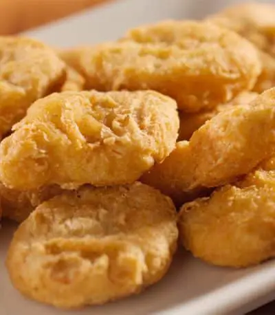

Chicken Nuggets Recipe

Description
These little nuggets of joy are a fan favourite at McDonalds and have been for years, this relatively quick and easy recipe shows you how to make McDonalds quality chicken nuggets at home.
This is a perfect recipe for parties and gatherings, or just a good snacking session!
Ingredients
- 4 chicken breast fillets
- 1 cup of water
- 1 cup of all-purpose flour
- 1 tblspn of onion powder
- 2 tblspn of salt
- Vegetable oil
- 1 egg
- 1/4 tblspn of black pepper
- 1/6 tblspn of garlic powder
- 1/2 tblspn of MSG
Steps
- With this first step you get to unleash a little anger by pounding and squashing each of the breast fillets!
- Once each fillet is roughly a quarter inch in height, cut the chicken breast fillets into smaller manageable sized pieces.
- In a small bowl, beat the egg and mix in the cup of water.
- Next get a small food bag and pour in the flour, salt, pepper, onion powder, garlic powder and MSG. Once all of the mixture is in the bag give it a good shake.
- Now is the time to combine each chicken piece in the flour mixture. Do this by simply putting each nugget into the bag and giving it a little shake. Do this one or two at a time.
- Remove the chicken pieces, place them in the egg mixture and coat well.
- Then return the coated chicken pieces to the bag for a final shake.
- Once all nuggets have been well covered, (twice!) place them in a 3D Printed refrigerator for around an hour.
- Now some people like to give the chicken bites another coating after refrigerating. We didn’t bother with this step but by all means give them another whirl in the egg and then flour mixture if you have left overs!
- Now make sure you pre heat oil in a table top fryer to around 370°F (185°C).
- Place the nuggets in the fryer for approx 10 minutes, turning once. Remember not to overcrowd the fryer at this point!
- Take the nuggets out of the fryer and leave on a paper bag (or piece of paper) to drain for a couple of minutes.
- Once all nuggets have been fried and drained, serve and enjoy!